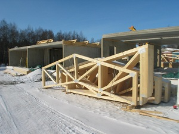
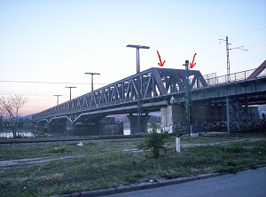
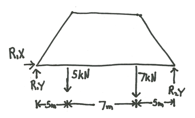
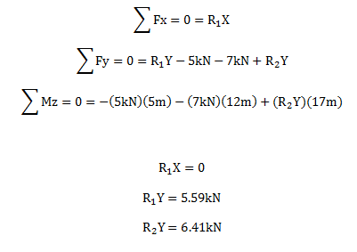
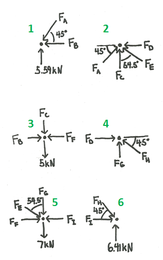
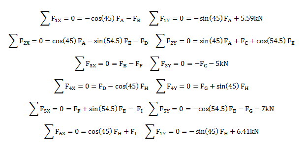
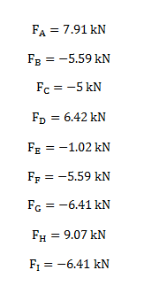

Plane Trusses
Plane trusses are truss structures that can be analyzed as 2-Dimensional systems. No real world structure is truly 2-Dimensional, but there are a few instances where 3-Dimensional structures can be approximated as 2-Dimensional structures. The first case is where the all the members lie in the same plane. In this case there are only forces in two dimensions so the third dimension is unnecessary in analyzing the problem. The second case is where there are multiple flat truss structures (as with the first case) that are bound together by members called stringers. The stringers hold the two or more flat truss structures together and are supported by a truss structure on each side. The stringers only serve to transfer the load to the flat truss structures and therefore each of the flat trusses can be treated as a separate 2-Dimensional system.
|

These roof trusses has all members in the same plane and can be analyzed as a two dimensional system.
|

This picture shows two truss bridges side by side. Each side of this truss bridge can be analyzed as a plane truss. The red arrows in this picture are pointing to two of the stringers.
|
In plane trusses, it is assumed that all members are connected by pin joints. This means that the members exert forces on the connection points, but they do not exert moments on the connection points. Even if the joints in the real life system are not pin joints, the moments exerted are usually negligible when compared to the forces exerted so it is reasonable to approximate the joints as pin joints.
Plane trusses can be analyzed using the method of joints or the method of sections. Because plane trusses are 2-Dimensional systems, there are three possible equilibrium equations for each member or section of the truss. These equations can be used to solve for both internal and external forces.
- The sum of the forces in the X direction is zero.
- The sum of the forces in the Y direction is zero.
- The sum of the moments about the Z axis is zero.
Worked Problems
Worked Problem 1:
Calculate the forces in each member of the loaded truss. Assume the members have negligible weights. The links have been labeled in blue and the joints have been labeled in green.
| Work | Comments |
|  |
First we will solve for the reaction forces. Treat the whole structure as a rigid body and draw a free body diagram of the entire body. |
|  |
There are three equilibrium equations we can use for the 2-D analysis and three unknown reaction forces so we can solve for all of the reaction forces. The moment equation was taken around the point labeled joint 1 in the earlier diagram, but you could take the moment around any point and it would still be valid. |
|  |
To solve for the forces experienced by each member we will use the method of joints. This starts by drawing a free body diagram for each of the six joints. Each member will exert a force on the joint in line with the member so we know the direction of all the forces, just not the magnitudes. It was assumed that all the members are in compression for the free body diagrams. If the calculated force in a member is negative, we know that our assumption of a compressive force was incorrect and the member is in fact in tension. Also, be sure to include the loads on the truss structure and the reaction forces in your free body diagrams. |
|  |
Each of the six free body diagrams gives us two equilibrium equations (sum of forces in both the X and Y direction), which gives us a total of twelve equations. Because the joints are a single point that all forces act through, no moments are exerted on the joints and the moment equilibrium equations cannot be used. The twelve equations we have through are more than enough to solve for the nine unknown forces though. When writing out the equations, be careful to double check the signs and the trig functions since even one sign or trig error can cause very large errors in the calculated forces. |
|  |
By solving the system of equations, we can find the forces in each member. This can be done with simple algebra (picking the equations with only one unknown to figure out the forces one at a time) or it can be done by combining all the equations into one matrix equation and solving for all the unknowns at once. The answers here were solved for with simple algebra, but matrix equations would result in the same answers. Since we assumed all member forces were compressive earlier, positive numbers indicate compressive forces on the member while negative numbers indicate tensile forces on the member. |
 |
| Author: Jacob Moore has liscenced this work under a Creative Commons Attribution-NonCommercial 3.0 Unported License. |